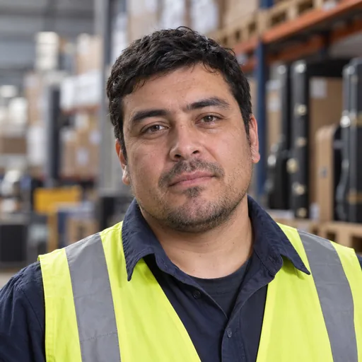
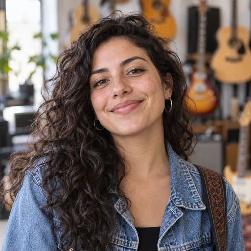
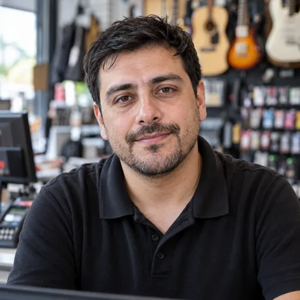
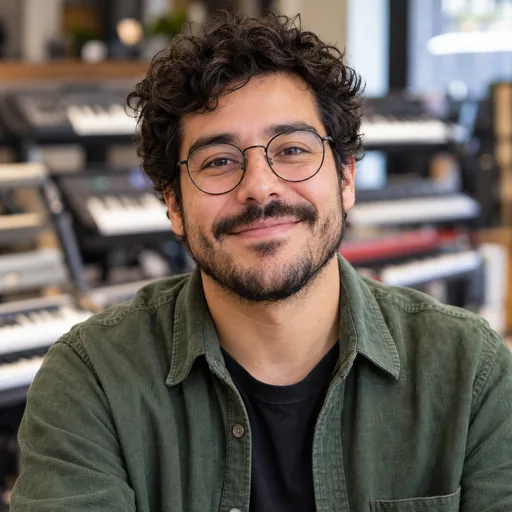
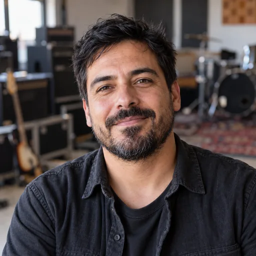
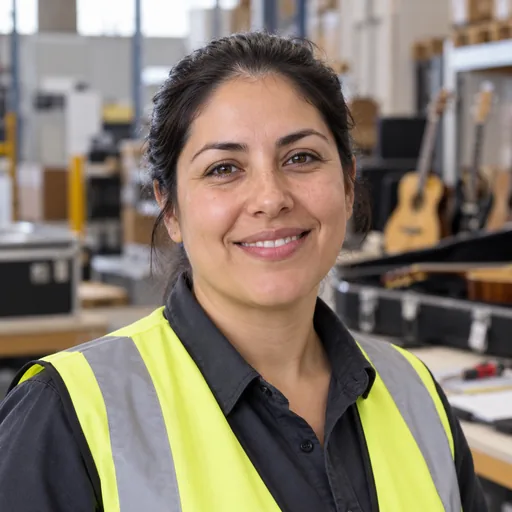
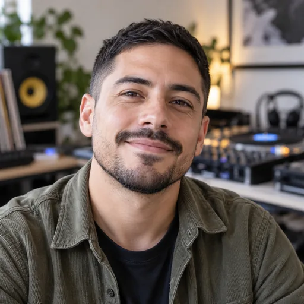

Conocimiento que da contexto
Cada perfil tiene conocimientos de su área y fuentes asociadas. Pregunta por procesos, conceptos y decisiones para descubrir cómo funciona el proyecto desde dentro.
Personas de IA para aprender en el aula
Cada persona conoce su área, tiene experiencias y una forma propia de expresarse. Lleva las entrevistas al aula y ayuda a tus estudiantes a entender de qué trata un proyecto, qué necesitan sus personas y qué vale la pena mejorar.

Respuestas de ejemplo, sin llamadas a IA ni memoria persistente. Instala el proyecto para conversar con DeepSeek.
Convierte la descripción de un proyecto en una conversación. Tus estudiantes pueden explorar lo que las personas saben, cómo viven el servicio y qué esperan de una solución.
Llevar una actividad al aula ↗Cada perfil tiene conocimientos de su área y fuentes asociadas. Pregunta por procesos, conceptos y decisiones para descubrir cómo funciona el proyecto desde dentro.
Un jefe responde con prioridades; un trabajador agotado habla de lo que le dificulta el turno; otro entusiasta propone mejoras. Su tono, expresiones y experiencias dan sentido a cada conversación.
Los clientes cuentan qué aman del servicio y qué les gustaría cambiar. Contrasta sus respuestas con las del equipo para descubrir necesidades que una descripción inicial puede dejar fuera.
Usa lo aprendido para explicar el alcance, justificar una mejora o preparar requisitos. Como docente, también puedes crear personas y vincular documentos de tu propio caso.
¿Cómo funciona la tienda? ¿Qué falla en bodega? ¿Qué espera un cliente al pagar? En cada proyecto, cinco personas aportan conocimiento técnico, expresiones y experiencias distintas. Entrevístalas para entender el servicio antes de proponer una solución.
Catálogo, carrito, compras desde el móvil y seguimiento de pedidos.

Atención en el local, caja, demostraciones y retiros de compras web.


Inventario, recepción, calidad y entrega de instrumentos.


Cobros, BeatPay, devoluciones y conciliación de operaciones.

Caso educativo ficticio. Los montos son presupuestos de los patrocinadores del escenario, no el precio de esta plataforma. Cada proyecto tiene cinco personas con experiencias y prioridades propias.
Como docente, define el propósito y acompaña el proceso. Como estudiante, prepara tu entrevista, repregunta con curiosidad y explica qué descubriste a partir de las respuestas.
Elige un caso y los perfiles que entrevistará cada grupo. Define el tema, las preguntas iniciales y qué evidencias recogerán para compartir lo aprendido.
Usa preguntas abiertas: ¿cómo lo haces?, ¿qué pasó?, ¿por qué te importa? Pide situaciones concretas y deja que cada respuesta oriente la siguiente pregunta.
Contrasta las entrevistas. ¿En qué coinciden las personas? ¿Qué contradicciones aparecen? Distingue lo que dijeron de tus interpretaciones y revisa las dudas que quedan.
Presenta tus hallazgos con ejemplos de la conversación. Revisen en clase la calidad de las preguntas y qué repreguntas ayudaron a comprender mejor a cada persona.
Elige entre 20 personas de Music Pro, 3 ejemplos y 8 personajes literarios, históricos y culturales. Revisa su ficha para preparar la entrevista.
31 personas disponibles
En Windows, el instalador prepara Python si hace falta, las dependencias, la configuración y la carga inicial. Las 31 personas y sus imágenes ya vienen en el proyecto.
Necesitas conexión a Internet y una API Key de DeepSeek con acceso y saldo para el chat. El instalador guarda la clave con entrada oculta; no consume la API para validarla.
Clona el repositorio o descarga el ZIP completo. Extrae todos los archivos, incluidas las imágenes de static/img/personas/.
Haz doble clic y pega tu clave de DeepSeek cuando se solicite. Se verifican los avatares y se carga todo con un único seeder, sin pasos separados para Music Pro.
El navegador abre la aplicación en 127.0.0.1:5000. Inicia sesión y elige una persona. En los siguientes usos, abre iniciar.bat.
Desde PowerShell, en la raíz del proyecto:
python -m venv venv .\venv\Scripts\python.exe -m pip install -r requirements.txt .\venv\Scripts\python.exe configurar.py .\venv\Scripts\python.exe seed.py .\venv\Scripts\python.exe ejecutar.py
Con Python 3.10 o superior, ejecuta desde la raíz del proyecto:
python3 -m venv venv source venv/bin/activate python -m pip install -r requirements.txt python configurar.py python seed.py python ejecutar.py
La interfaz envía las conversaciones a Flask. El prompt combina perfil, identidad, fuentes asociadas y contexto para consultar DeepSeek. SQLite guarda las personas, sesiones, mensajes y memoria. El dashboard permite administrar estos elementos.
El catálogo se define en personas.py y se carga con seed.py. Los retratos WebP se distribuyen con el proyecto: no requieren generar imágenes ni una clave de OpenAI.
No. La demo muestra respuestas preparadas para explorar los perfiles y no guarda memoria en SQLite. La conversación abierta con DeepSeek funciona en la aplicación instalada.
Prepara una pauta de entrevista, distribuye personas entre los grupos y pide que compartan preguntas, respuestas y reflexiones. Puedes orientar la actividad a conocer un contexto, contrastar perspectivas o descubrir necesidades de un sistema.
No. Son simulaciones generadas por IA. Revisa las respuestas y contrasta los datos antes de usarlos como hechos. En personajes históricos o literarios, distingue la interpretación del agente de las fuentes de tu asignatura.
El instalador conserva credenciales, usuarios y conversaciones. El seeder agrega personas faltantes sin duplicarlas ni sobrescribir las existentes. En una instalación desde cero se carga todo el catálogo actual.
No. Las 31 personas se cargan con sus conocimientos, conversaciones de ejemplo y avatares locales. Los 20 perfiles de Music Pro están incluidos en esa misma carga.
Si faltan imágenes, vuelve a descargar la carpeta completa. Si falla una descarga, revisa la conexión y repite el instalador. Si el chat rechaza la clave, comprueba tu acceso y saldo de DeepSeek. Para un puerto 5000 ocupado, cierra la otra instancia.